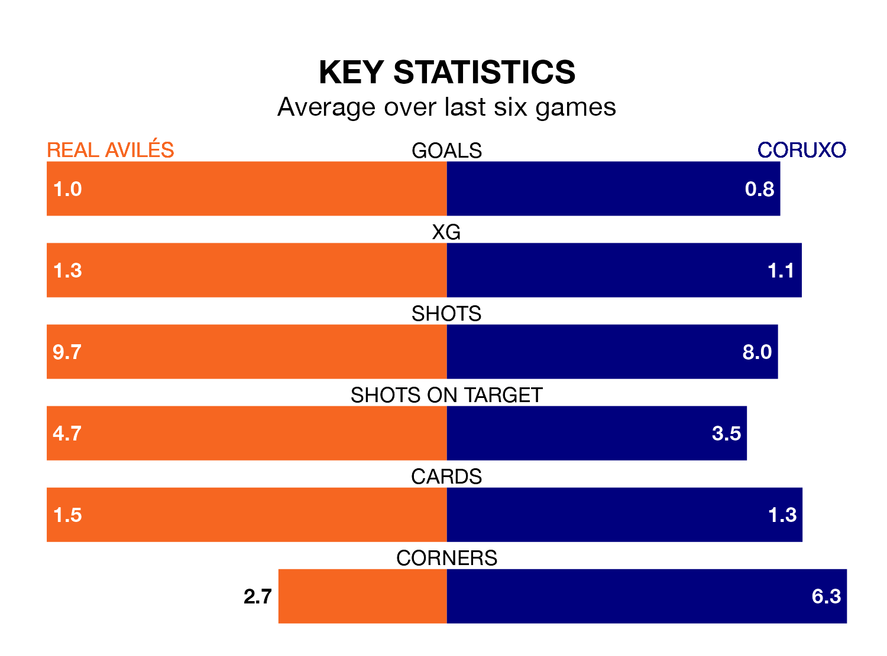

Real Avilés face Coruxo on Sunday seeking to protect their long unbeaten run in the Segunda División RFEF Group 1.
Avilés are unbeaten in five, with two wins and three draws, ahead of the 4pm kick-off.
They face a Coruxo team who have drawn two and lost three over the same number of games.
With 27 goals in 23 games so far this season, Coruxo are scoring more than average in the league with 1.2 goals per game. But they are conceding more than average too, letting in 32 goals at a rate of 1.4 per game.
Avilés, meanwhile, are average scorers, with 1.1 goals per game. They have conceded 1.0 goal per game.
In the last 10 years, Avilés and Coruxo have played each other on eight occasions. Avilés won two of them, Coruxo four, and they drew twice.
On average, Avilés scored 0.8 goals and Coruxo 1.0 in those matches.
Their last meeting was on October 22, when they played out a 1-1 draw.
The home team are eighth in the table after 23 games, of which they have won six and drawn 12, earning 30 points.
The visitors are one place behind Avilés in ninth, with eight wins and five draws putting them on 29 points.
Avilés's last match was on February 18, a 1-1 draw against Cayón, with Claudio Medina Ricoy getting the goal for Avilés.
Coruxo lost 3-1 against Pontevedra CF last time out, also on February 18.
Updated: 12:18 (UTC), 19/02/24